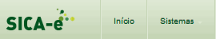
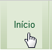
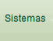
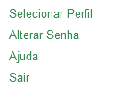
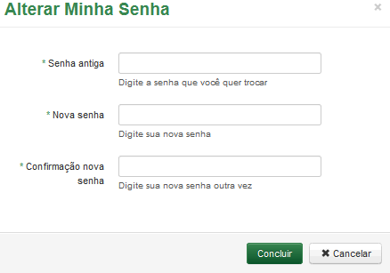
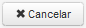
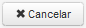
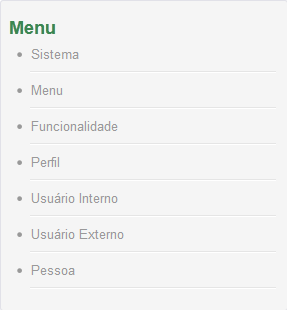

Sistema
Ao acessar o sistema SICA-e será apresentada a seguinte tela:

Acione a opção  para retornar à tela inicial do sistema SICA-e. Para alterar o sistema acione a opção .
Selecione a opção para as ações desejadas.

Ao selecionar a opção "Alterar Senha" será exibido o formulário abaixo:

Ao preencher os campos solicitados clique em  para finalizar o registro de alteração de senha ou clique em para voltar a tela inicial.
para finalizar o registro de alteração de senha ou clique em para voltar a tela inicial.
Para pesquisar as funcionalidades do Sistema, acione no Menu a opção desejada (Figura abaixo):


Created with the Personal Edition of HelpNDoc: Free HTML Help documentation generator